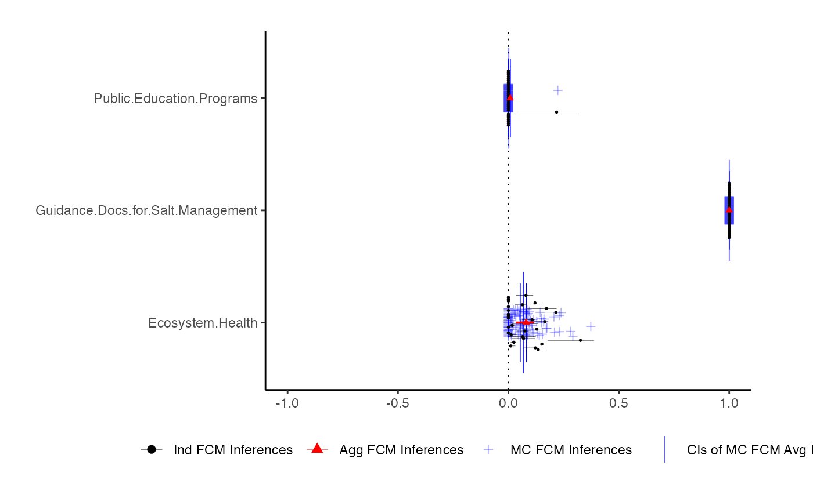
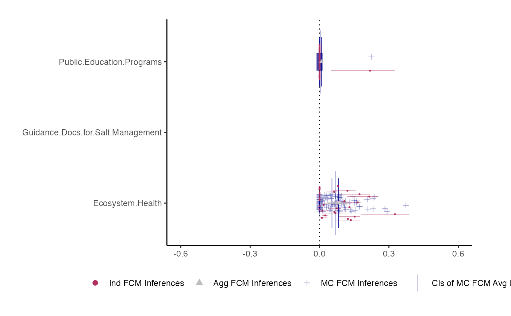

This plots the output of fcmconfr() using ggplot. Set interactive = TRUE to load plot in a Shiny app and toggle on/off results from different analyses.
Usage
# S3 method for class 'fcmconfr'
plot(
x,
interactive = FALSE,
filter_limit = 0.001,
xlim = NA,
coord_flip = FALSE,
text_font_size = NA,
mc_avg_and_CIs_color = "blue",
mc_inferences_color = "blue",
mc_inferences_alpha = 0.3,
mc_inferences_shape = 3,
ind_inferences_color = "black",
ind_inferences_alpha = 1,
ind_inferences_shape = 16,
agg_inferences_color = "red",
agg_inferences_alpha = 1,
agg_inferences_shape = 17,
ind_ivfn_and_tfn_linewidth = 0.1,
agg_ivfn_and_tfn_linewidth = 0.6,
...
)Arguments
- x
A direct output of the
fcmconfrfunction- interactive
[
logical(1)]
If TRUE, launch plot in a Shiny app to toggle on/off results from different analyses.- filter_limit
[
double(1)]
Only nodes with inferences above the filter_limit across any analysis will be plotted. This removes nodes with mostly 0-valued inferences indicating they were not impacted in the simulation.- xlim
[
double(1)]
The x-axis plot limits. xlim = NA lets ggplot determine the x-axis limits. xlim = c(lower_limit, upper_limit) for manual input limits. See ?ggplot2::xlim for additional info.- coord_flip
[
logical(1)]
Swap x- and y-axes (i.e. rotate plot). See ?ggplot2::coord_flip for additional info.- text_font_size
[
double(1)]
The font size of axis labels. text_font_size = NA lets ggplot determine the axis label font size.- mc_avg_and_CIs_color
[
character(1)]
Color of the crossbar (lines) indicating the avg inferences of empirical FCMs generated via Monte Carlo sampling and the confidence intervals about those averages.- mc_inferences_color
[
character(1)]
Color of the points representing inferences of empirical FCMs generated via Monte Carlo sampling.- mc_inferences_alpha
[
double(1)- Positive (between 0 and 1)]
Transparency of the points representing inferences of empirical FCMs generated via Monte Carlo sampling. Range from 0 to 1 (0: Transparent to 1: Opaque).- mc_inferences_shape
[
integer(1)orcharacter(1)]
Point shapes of the points representing inferences of empirical FCMs generated via Monte Carlo sampling. Accepts PCH point values and character strings.- ind_inferences_color
[
character(1)]
Color of the points representing inferences of individual FCMs.- ind_inferences_alpha
[
double(1)- Positive (between 0 and 1)]
Transparency of the points representing inferences of individual FCMs. Range from 0 to 1 (0: Transparent to 1: Opaque).- ind_inferences_shape
[
integer(1)orcharacter(1)]
Point shapes of the points representing inferences of individual FCMs. Accepts PCH point values and character strings. Ignored for IVFN FCMs.- agg_inferences_color
[
character(1)]
Color of the points representing inferences of the aggregate FCM- agg_inferences_alpha
[
double(1)- Positive (between 0 and 1)]
Transparency of the points representing inferences of the aggregate FCM. Range from 0 to 1 (0: Transparent to 1: Opaque).- agg_inferences_shape
[
integer(1)orcharacter(1)]
Point shapes of the points representing inferences of the aggregate FCM. Accepts PCH point values and character strings. Ignored for IVFN FCMs.- ind_ivfn_and_tfn_linewidth
[
double(1)- Positive]
Linewidth of lines representing inferences for analyses of individual IVFN- and TFN- FCMs.- agg_ivfn_and_tfn_linewidth
[
double(1)- Positive]
Linewidth of lines representing inferences for analyses of aggregate IVFN- and TFN- FCMs- ...
Additional inputs
Details
Generates a generic plot visualizing fcmconfr results.
Examples
# Example using TFN FCMs fcmconfr
tfn_example_fcmconfr <- fcmconfr(
adj_matrices = sample_fcms$simple_fcms$tfn_fcms,
# adj_matrices = group_tfn_fcms,
# Aggregation and Monte Carlo Sampling
agg_function = 'mean',
num_mc_fcms = 100,
# Simulation
initial_state_vector = c(1, 1, 1, 1, 1, 1, 1),
clamping_vector = c(1, 0, 0, 0, 0, 0, 0),
activation = 'rescale',
squashing = 'sigmoid',
lambda = 1,
point_of_inference = "final",
max_iter = 1000,
min_error = 1e-05,
# Inference Estimation (bootstrap)
ci_centering_function = "mean",
confidence_interval = 0.95,
# Runtime Options
show_progress = TRUE,
parallel = FALSE,
# Additional Options
run_agg_calcs = TRUE,
run_mc_calcs = TRUE,
run_ci_calcs = TRUE,
include_zeroes_in_sampling = TRUE,
include_sims_in_output = TRUE
)
#> [1] Simulating Input FCMs
#>
#> [1] Running Simulations
#>
| | 0 % ~calculating
|++ | 3 % ~31s
|++++ | 7 % ~30s
|+++++ | 10% ~28s
|+++++++ | 13% ~27s
|+++++++++ | 17% ~26s
|++++++++++ | 20% ~25s
|++++++++++++ | 23% ~24s
|++++++++++++++ | 27% ~23s
|+++++++++++++++ | 30% ~22s
|+++++++++++++++++ | 33% ~21s
|+++++++++++++++++++ | 37% ~19s
|++++++++++++++++++++ | 40% ~19s
|++++++++++++++++++++++ | 43% ~18s
|++++++++++++++++++++++++ | 47% ~17s
|+++++++++++++++++++++++++ | 50% ~15s
|+++++++++++++++++++++++++++ | 53% ~15s
|+++++++++++++++++++++++++++++ | 57% ~13s
|++++++++++++++++++++++++++++++ | 60% ~12s
|++++++++++++++++++++++++++++++++ | 63% ~11s
|++++++++++++++++++++++++++++++++++ | 67% ~10s
|+++++++++++++++++++++++++++++++++++ | 70% ~09s
|+++++++++++++++++++++++++++++++++++++ | 73% ~08s
|+++++++++++++++++++++++++++++++++++++++ | 77% ~07s
|++++++++++++++++++++++++++++++++++++++++ | 80% ~06s
|++++++++++++++++++++++++++++++++++++++++++ | 83% ~05s
|++++++++++++++++++++++++++++++++++++++++++++ | 87% ~04s
|+++++++++++++++++++++++++++++++++++++++++++++ | 90% ~03s
|+++++++++++++++++++++++++++++++++++++++++++++++ | 93% ~02s
|+++++++++++++++++++++++++++++++++++++++++++++++++ | 97% ~01s
|++++++++++++++++++++++++++++++++++++++++++++++++++| 100% elapsed=31s
#> [1] Sampling from column vectors
#> Sampling from column vectors
| | 0 % ~calculating
|++ | 2 % ~00s
|+++ | 4 % ~00s
|++++ | 6 % ~00s
|+++++ | 8 % ~00s
|++++++ | 10% ~00s
|+++++++ | 12% ~00s
|++++++++ | 14% ~00s
|+++++++++ | 16% ~00s
|++++++++++ | 18% ~00s
|+++++++++++ | 20% ~00s
|++++++++++++ | 22% ~00s
|+++++++++++++ | 24% ~00s
|++++++++++++++ | 27% ~00s
|+++++++++++++++ | 29% ~00s
|++++++++++++++++ | 31% ~00s
|+++++++++++++++++ | 33% ~00s
|++++++++++++++++++ | 35% ~00s
|+++++++++++++++++++ | 37% ~00s
|++++++++++++++++++++ | 39% ~00s
|+++++++++++++++++++++ | 41% ~00s
|++++++++++++++++++++++ | 43% ~00s
|+++++++++++++++++++++++ | 45% ~00s
|++++++++++++++++++++++++ | 47% ~00s
|+++++++++++++++++++++++++ | 49% ~00s
|++++++++++++++++++++++++++ | 51% ~00s
|+++++++++++++++++++++++++++ | 53% ~00s
|++++++++++++++++++++++++++++ | 55% ~00s
|+++++++++++++++++++++++++++++ | 57% ~00s
|++++++++++++++++++++++++++++++ | 59% ~00s
|+++++++++++++++++++++++++++++++ | 61% ~00s
|++++++++++++++++++++++++++++++++ | 63% ~00s
|+++++++++++++++++++++++++++++++++ | 65% ~00s
|++++++++++++++++++++++++++++++++++ | 67% ~00s
|+++++++++++++++++++++++++++++++++++ | 69% ~00s
|++++++++++++++++++++++++++++++++++++ | 71% ~00s
|+++++++++++++++++++++++++++++++++++++ | 73% ~00s
|++++++++++++++++++++++++++++++++++++++ | 76% ~00s
|+++++++++++++++++++++++++++++++++++++++ | 78% ~00s
|++++++++++++++++++++++++++++++++++++++++ | 80% ~00s
|+++++++++++++++++++++++++++++++++++++++++ | 82% ~00s
|++++++++++++++++++++++++++++++++++++++++++ | 84% ~00s
|+++++++++++++++++++++++++++++++++++++++++++ | 86% ~00s
|++++++++++++++++++++++++++++++++++++++++++++ | 88% ~00s
|+++++++++++++++++++++++++++++++++++++++++++++ | 90% ~00s
|++++++++++++++++++++++++++++++++++++++++++++++ | 92% ~00s
|+++++++++++++++++++++++++++++++++++++++++++++++ | 94% ~00s
|++++++++++++++++++++++++++++++++++++++++++++++++ | 96% ~00s
|+++++++++++++++++++++++++++++++++++++++++++++++++ | 98% ~00s
|++++++++++++++++++++++++++++++++++++++++++++++++++| 100% elapsed=00s
#> [1] Constructing monte carlo fcms from samples
#> Constructing monte carlo fcms from samples
| | 0 % ~calculating
|+ | 1 % ~00s
|+ | 2 % ~00s
|++ | 3 % ~00s
|++ | 4 % ~00s
|+++ | 5 % ~00s
|+++ | 6 % ~00s
|++++ | 7 % ~00s
|++++ | 8 % ~00s
|+++++ | 9 % ~00s
|+++++ | 10% ~00s
|++++++ | 11% ~00s
|++++++ | 12% ~00s
|+++++++ | 13% ~00s
|+++++++ | 14% ~00s
|++++++++ | 15% ~00s
|++++++++ | 16% ~00s
|+++++++++ | 17% ~00s
|+++++++++ | 18% ~00s
|++++++++++ | 19% ~00s
|++++++++++ | 20% ~00s
|+++++++++++ | 21% ~00s
|+++++++++++ | 22% ~00s
|++++++++++++ | 23% ~00s
|++++++++++++ | 24% ~00s
|+++++++++++++ | 25% ~00s
|+++++++++++++ | 26% ~00s
|++++++++++++++ | 27% ~00s
|++++++++++++++ | 28% ~00s
|+++++++++++++++ | 29% ~00s
|+++++++++++++++ | 30% ~00s
|++++++++++++++++ | 31% ~00s
|++++++++++++++++ | 32% ~00s
|+++++++++++++++++ | 33% ~00s
|+++++++++++++++++ | 34% ~00s
|++++++++++++++++++ | 35% ~00s
|++++++++++++++++++ | 36% ~00s
|+++++++++++++++++++ | 37% ~00s
|+++++++++++++++++++ | 38% ~00s
|++++++++++++++++++++ | 39% ~00s
|++++++++++++++++++++ | 40% ~00s
|+++++++++++++++++++++ | 41% ~00s
|+++++++++++++++++++++ | 42% ~00s
|++++++++++++++++++++++ | 43% ~00s
|++++++++++++++++++++++ | 44% ~00s
|+++++++++++++++++++++++ | 45% ~00s
|+++++++++++++++++++++++ | 46% ~00s
|++++++++++++++++++++++++ | 47% ~00s
|++++++++++++++++++++++++ | 48% ~00s
|+++++++++++++++++++++++++ | 49% ~00s
|+++++++++++++++++++++++++ | 50% ~00s
|++++++++++++++++++++++++++ | 51% ~00s
|++++++++++++++++++++++++++ | 52% ~00s
|+++++++++++++++++++++++++++ | 53% ~00s
|+++++++++++++++++++++++++++ | 54% ~00s
|++++++++++++++++++++++++++++ | 55% ~00s
|++++++++++++++++++++++++++++ | 56% ~00s
|+++++++++++++++++++++++++++++ | 57% ~00s
|+++++++++++++++++++++++++++++ | 58% ~00s
|++++++++++++++++++++++++++++++ | 59% ~00s
|++++++++++++++++++++++++++++++ | 60% ~00s
|+++++++++++++++++++++++++++++++ | 61% ~00s
|+++++++++++++++++++++++++++++++ | 62% ~00s
|++++++++++++++++++++++++++++++++ | 63% ~00s
|++++++++++++++++++++++++++++++++ | 64% ~00s
|+++++++++++++++++++++++++++++++++ | 65% ~00s
|+++++++++++++++++++++++++++++++++ | 66% ~00s
|++++++++++++++++++++++++++++++++++ | 67% ~00s
|++++++++++++++++++++++++++++++++++ | 68% ~00s
|+++++++++++++++++++++++++++++++++++ | 69% ~00s
|+++++++++++++++++++++++++++++++++++ | 70% ~00s
|++++++++++++++++++++++++++++++++++++ | 71% ~00s
|++++++++++++++++++++++++++++++++++++ | 72% ~00s
|+++++++++++++++++++++++++++++++++++++ | 73% ~00s
|+++++++++++++++++++++++++++++++++++++ | 74% ~00s
|++++++++++++++++++++++++++++++++++++++ | 75% ~00s
|++++++++++++++++++++++++++++++++++++++ | 76% ~00s
|+++++++++++++++++++++++++++++++++++++++ | 77% ~00s
|+++++++++++++++++++++++++++++++++++++++ | 78% ~00s
|++++++++++++++++++++++++++++++++++++++++ | 79% ~00s
|++++++++++++++++++++++++++++++++++++++++ | 80% ~00s
|+++++++++++++++++++++++++++++++++++++++++ | 81% ~00s
|+++++++++++++++++++++++++++++++++++++++++ | 82% ~00s
|++++++++++++++++++++++++++++++++++++++++++ | 83% ~00s
|++++++++++++++++++++++++++++++++++++++++++ | 84% ~00s
|+++++++++++++++++++++++++++++++++++++++++++ | 85% ~00s
|+++++++++++++++++++++++++++++++++++++++++++ | 86% ~00s
|++++++++++++++++++++++++++++++++++++++++++++ | 87% ~00s
|++++++++++++++++++++++++++++++++++++++++++++ | 88% ~00s
|+++++++++++++++++++++++++++++++++++++++++++++ | 89% ~00s
|+++++++++++++++++++++++++++++++++++++++++++++ | 90% ~00s
|++++++++++++++++++++++++++++++++++++++++++++++ | 91% ~00s
|++++++++++++++++++++++++++++++++++++++++++++++ | 92% ~00s
|+++++++++++++++++++++++++++++++++++++++++++++++ | 93% ~00s
|+++++++++++++++++++++++++++++++++++++++++++++++ | 94% ~00s
|++++++++++++++++++++++++++++++++++++++++++++++++ | 95% ~00s
|++++++++++++++++++++++++++++++++++++++++++++++++ | 96% ~00s
|+++++++++++++++++++++++++++++++++++++++++++++++++ | 97% ~00s
|+++++++++++++++++++++++++++++++++++++++++++++++++ | 98% ~00s
|++++++++++++++++++++++++++++++++++++++++++++++++++| 99% ~00s
|++++++++++++++++++++++++++++++++++++++++++++++++++| 100% elapsed=00s
#>
#> [1] Running Simulations
#>
| | 0 % ~calculating
|+ | 1 % ~07s
|+ | 2 % ~06s
|++ | 3 % ~06s
|++ | 4 % ~05s
|+++ | 5 % ~05s
|+++ | 6 % ~05s
|++++ | 7 % ~05s
|++++ | 8 % ~05s
|+++++ | 9 % ~05s
|+++++ | 10% ~05s
|++++++ | 11% ~05s
|++++++ | 12% ~05s
|+++++++ | 13% ~05s
|+++++++ | 14% ~05s
|++++++++ | 15% ~04s
|++++++++ | 16% ~04s
|+++++++++ | 17% ~04s
|+++++++++ | 18% ~04s
|++++++++++ | 19% ~04s
|++++++++++ | 20% ~04s
|+++++++++++ | 21% ~04s
|+++++++++++ | 22% ~04s
|++++++++++++ | 23% ~04s
|++++++++++++ | 24% ~04s
|+++++++++++++ | 25% ~04s
|+++++++++++++ | 26% ~04s
|++++++++++++++ | 27% ~04s
|++++++++++++++ | 28% ~04s
|+++++++++++++++ | 29% ~04s
|+++++++++++++++ | 30% ~04s
|++++++++++++++++ | 31% ~04s
|++++++++++++++++ | 32% ~04s
|+++++++++++++++++ | 33% ~04s
|+++++++++++++++++ | 34% ~04s
|++++++++++++++++++ | 35% ~04s
|++++++++++++++++++ | 36% ~04s
|+++++++++++++++++++ | 37% ~04s
|+++++++++++++++++++ | 38% ~04s
|++++++++++++++++++++ | 39% ~04s
|++++++++++++++++++++ | 40% ~03s
|+++++++++++++++++++++ | 41% ~03s
|+++++++++++++++++++++ | 42% ~03s
|++++++++++++++++++++++ | 43% ~03s
|++++++++++++++++++++++ | 44% ~03s
|+++++++++++++++++++++++ | 45% ~03s
|+++++++++++++++++++++++ | 46% ~03s
|++++++++++++++++++++++++ | 47% ~03s
|++++++++++++++++++++++++ | 48% ~03s
|+++++++++++++++++++++++++ | 49% ~03s
|+++++++++++++++++++++++++ | 50% ~03s
|++++++++++++++++++++++++++ | 51% ~03s
|++++++++++++++++++++++++++ | 52% ~03s
|+++++++++++++++++++++++++++ | 53% ~03s
|+++++++++++++++++++++++++++ | 54% ~03s
|++++++++++++++++++++++++++++ | 55% ~03s
|++++++++++++++++++++++++++++ | 56% ~02s
|+++++++++++++++++++++++++++++ | 57% ~02s
|+++++++++++++++++++++++++++++ | 58% ~02s
|++++++++++++++++++++++++++++++ | 59% ~02s
|++++++++++++++++++++++++++++++ | 60% ~02s
|+++++++++++++++++++++++++++++++ | 61% ~02s
|+++++++++++++++++++++++++++++++ | 62% ~02s
|++++++++++++++++++++++++++++++++ | 63% ~02s
|++++++++++++++++++++++++++++++++ | 64% ~02s
|+++++++++++++++++++++++++++++++++ | 65% ~02s
|+++++++++++++++++++++++++++++++++ | 66% ~02s
|++++++++++++++++++++++++++++++++++ | 67% ~02s
|++++++++++++++++++++++++++++++++++ | 68% ~02s
|+++++++++++++++++++++++++++++++++++ | 69% ~02s
|+++++++++++++++++++++++++++++++++++ | 70% ~02s
|++++++++++++++++++++++++++++++++++++ | 71% ~02s
|++++++++++++++++++++++++++++++++++++ | 72% ~02s
|+++++++++++++++++++++++++++++++++++++ | 73% ~02s
|+++++++++++++++++++++++++++++++++++++ | 74% ~01s
|++++++++++++++++++++++++++++++++++++++ | 75% ~01s
|++++++++++++++++++++++++++++++++++++++ | 76% ~01s
|+++++++++++++++++++++++++++++++++++++++ | 77% ~01s
|+++++++++++++++++++++++++++++++++++++++ | 78% ~01s
|++++++++++++++++++++++++++++++++++++++++ | 79% ~01s
|++++++++++++++++++++++++++++++++++++++++ | 80% ~01s
|+++++++++++++++++++++++++++++++++++++++++ | 81% ~01s
|+++++++++++++++++++++++++++++++++++++++++ | 82% ~01s
|++++++++++++++++++++++++++++++++++++++++++ | 83% ~01s
|++++++++++++++++++++++++++++++++++++++++++ | 84% ~01s
|+++++++++++++++++++++++++++++++++++++++++++ | 85% ~01s
|+++++++++++++++++++++++++++++++++++++++++++ | 86% ~01s
|++++++++++++++++++++++++++++++++++++++++++++ | 87% ~01s
|++++++++++++++++++++++++++++++++++++++++++++ | 88% ~01s
|+++++++++++++++++++++++++++++++++++++++++++++ | 89% ~01s
|+++++++++++++++++++++++++++++++++++++++++++++ | 90% ~01s
|++++++++++++++++++++++++++++++++++++++++++++++ | 91% ~00s
|++++++++++++++++++++++++++++++++++++++++++++++ | 92% ~00s
|+++++++++++++++++++++++++++++++++++++++++++++++ | 93% ~00s
|+++++++++++++++++++++++++++++++++++++++++++++++ | 94% ~00s
|++++++++++++++++++++++++++++++++++++++++++++++++ | 95% ~00s
|++++++++++++++++++++++++++++++++++++++++++++++++ | 96% ~00s
|+++++++++++++++++++++++++++++++++++++++++++++++++ | 97% ~00s
|+++++++++++++++++++++++++++++++++++++++++++++++++ | 98% ~00s
|++++++++++++++++++++++++++++++++++++++++++++++++++| 99% ~00s
|++++++++++++++++++++++++++++++++++++++++++++++++++| 100% elapsed=06s
#> [1] Performing bootstrap simulations
#>
| | 0 % ~calculating
|+ | 1 % ~00s
|+ | 2 % ~00s
|++ | 3 % ~00s
|++ | 4 % ~00s
|+++ | 5 % ~00s
|+++ | 6 % ~00s
|++++ | 7 % ~00s
|++++ | 8 % ~00s
|+++++ | 9 % ~00s
|+++++ | 10% ~00s
|++++++ | 11% ~00s
|++++++ | 12% ~00s
|+++++++ | 13% ~00s
|+++++++ | 14% ~00s
|++++++++ | 15% ~00s
|++++++++ | 16% ~00s
|+++++++++ | 17% ~00s
|+++++++++ | 18% ~00s
|++++++++++ | 19% ~00s
|++++++++++ | 20% ~00s
|+++++++++++ | 21% ~00s
|+++++++++++ | 22% ~00s
|++++++++++++ | 23% ~00s
|++++++++++++ | 24% ~00s
|+++++++++++++ | 25% ~00s
|+++++++++++++ | 26% ~00s
|++++++++++++++ | 27% ~00s
|++++++++++++++ | 28% ~00s
|+++++++++++++++ | 29% ~00s
|+++++++++++++++ | 30% ~00s
|++++++++++++++++ | 31% ~00s
|++++++++++++++++ | 32% ~00s
|+++++++++++++++++ | 33% ~00s
|+++++++++++++++++ | 34% ~00s
|++++++++++++++++++ | 35% ~00s
|++++++++++++++++++ | 36% ~00s
|+++++++++++++++++++ | 37% ~00s
|+++++++++++++++++++ | 38% ~00s
|++++++++++++++++++++ | 39% ~00s
|++++++++++++++++++++ | 40% ~00s
|+++++++++++++++++++++ | 41% ~00s
|+++++++++++++++++++++ | 42% ~00s
|++++++++++++++++++++++ | 43% ~00s
|++++++++++++++++++++++ | 44% ~00s
|+++++++++++++++++++++++ | 45% ~00s
|+++++++++++++++++++++++ | 46% ~00s
|++++++++++++++++++++++++ | 47% ~00s
|++++++++++++++++++++++++ | 48% ~00s
|+++++++++++++++++++++++++ | 49% ~00s
|+++++++++++++++++++++++++ | 50% ~00s
|++++++++++++++++++++++++++ | 51% ~00s
|++++++++++++++++++++++++++ | 52% ~00s
|+++++++++++++++++++++++++++ | 53% ~00s
|+++++++++++++++++++++++++++ | 54% ~00s
|++++++++++++++++++++++++++++ | 55% ~00s
|++++++++++++++++++++++++++++ | 56% ~00s
|+++++++++++++++++++++++++++++ | 57% ~00s
|+++++++++++++++++++++++++++++ | 58% ~00s
|++++++++++++++++++++++++++++++ | 59% ~00s
|++++++++++++++++++++++++++++++ | 60% ~00s
|+++++++++++++++++++++++++++++++ | 61% ~00s
|+++++++++++++++++++++++++++++++ | 62% ~00s
|++++++++++++++++++++++++++++++++ | 63% ~00s
|++++++++++++++++++++++++++++++++ | 64% ~00s
|+++++++++++++++++++++++++++++++++ | 65% ~00s
|+++++++++++++++++++++++++++++++++ | 66% ~00s
|++++++++++++++++++++++++++++++++++ | 67% ~00s
|++++++++++++++++++++++++++++++++++ | 68% ~00s
|+++++++++++++++++++++++++++++++++++ | 69% ~00s
|+++++++++++++++++++++++++++++++++++ | 70% ~00s
|++++++++++++++++++++++++++++++++++++ | 71% ~00s
|++++++++++++++++++++++++++++++++++++ | 72% ~00s
|+++++++++++++++++++++++++++++++++++++ | 73% ~00s
|+++++++++++++++++++++++++++++++++++++ | 74% ~00s
|++++++++++++++++++++++++++++++++++++++ | 75% ~00s
|++++++++++++++++++++++++++++++++++++++ | 76% ~00s
|+++++++++++++++++++++++++++++++++++++++ | 77% ~00s
|+++++++++++++++++++++++++++++++++++++++ | 78% ~00s
|++++++++++++++++++++++++++++++++++++++++ | 79% ~00s
|++++++++++++++++++++++++++++++++++++++++ | 80% ~00s
|+++++++++++++++++++++++++++++++++++++++++ | 81% ~00s
|+++++++++++++++++++++++++++++++++++++++++ | 82% ~00s
|++++++++++++++++++++++++++++++++++++++++++ | 83% ~00s
|++++++++++++++++++++++++++++++++++++++++++ | 84% ~00s
|+++++++++++++++++++++++++++++++++++++++++++ | 85% ~00s
|+++++++++++++++++++++++++++++++++++++++++++ | 86% ~00s
|++++++++++++++++++++++++++++++++++++++++++++ | 87% ~00s
|++++++++++++++++++++++++++++++++++++++++++++ | 88% ~00s
|+++++++++++++++++++++++++++++++++++++++++++++ | 89% ~00s
|+++++++++++++++++++++++++++++++++++++++++++++ | 90% ~00s
|++++++++++++++++++++++++++++++++++++++++++++++ | 91% ~00s
|++++++++++++++++++++++++++++++++++++++++++++++ | 92% ~00s
|+++++++++++++++++++++++++++++++++++++++++++++++ | 93% ~00s
|+++++++++++++++++++++++++++++++++++++++++++++++ | 94% ~00s
|++++++++++++++++++++++++++++++++++++++++++++++++ | 95% ~00s
|++++++++++++++++++++++++++++++++++++++++++++++++ | 96% ~00s
|+++++++++++++++++++++++++++++++++++++++++++++++++ | 97% ~00s
|+++++++++++++++++++++++++++++++++++++++++++++++++ | 98% ~00s
|++++++++++++++++++++++++++++++++++++++++++++++++++| 99% ~00s
|++++++++++++++++++++++++++++++++++++++++++++++++++| 100% elapsed=00s
#> [1] Done
# Plot Defaults
plot(tfn_example_fcmconfr,
interactive = FALSE, # Set to TRUE to open shiny app
# Plot Formatting Parameters
filter_limit = 1e-4,
xlim = c(-1, 1),
coord_flip = FALSE,
text_font_size = NA,
# Plot Aesthetic Parameters
mc_avg_and_CIs_color = "blue",
mc_inferences_color = "blue",
mc_inferences_alpha = 0.3,
mc_inferences_shape = 3,
ind_inferences_color = "black",
ind_inferences_alpha = 1,
ind_inferences_shape = 16,
agg_inferences_color = "red",
agg_inferences_alpha = 1,
agg_inferences_shape = 17,
ind_ivfn_and_tfn_linewidth = 0.1,
agg_ivfn_and_tfn_linewidth = 0.6
)

# Different from Plot Defaults
plot(tfn_example_fcmconfr,
interactive = FALSE, # Set to TRUE to open shiny app
# Plot Formatting Parameters
filter_limit = 1e-4,
xlim = c(-0.6, 0.6),
coord_flip = FALSE,
# Plot Aesthetic Parameters
mc_avg_and_CIs_color = "darkblue",
mc_inferences_color = "darkblue",
mc_inferences_shape = 3,
ind_inferences_color = "maroon",
ind_inferences_shape = 16,
agg_inferences_color = "grey",
agg_inferences_shape = 17,
ind_ivfn_and_tfn_linewidth = 0.1,
agg_ivfn_and_tfn_linewidth = 0.6
)

# Plot Defaults w/ Shiny App
# plot(tfn_example_fcmconfr,
# interactive = TRUE, # Set to TRUE to open shiny app
# # Plot Formatting Parameters
# filter_limit = 1e-4,
# coord_flip = FALSE,
# text_font_size = 12,
# # Plot Aesthetic Parameters
# mc_avg_and_CIs_color = "blue",
# mc_inferences_color = "blue",
# mc_inferences_shape = 3,
# ind_inferences_color = "black",
# ind_inferences_shape = 16,
# agg_inferences_color = "red",
# agg_inferences_shape = 17,
# ind_ivfn_and_tfn_linewidth = 0.1,
# agg_ivfn_and_tfn_linewidth = 0.6
# )